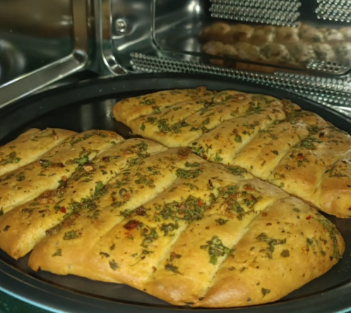

Garlic Breadsticks

Cook Time
18 mins
For the Dough
- 🤍 1 cup maida / all-purpose flour
- 🤍 ½ tsp salt
- 🤍 1 tsp sugar
- 🤍 ½ tsp active dry yeast
- 🤍 ¼ cup warm milk
- 🤍 ¼ cup warm water
- 🤍 ½ tsp garlic powder
- 🤍 ½ tsp oregano
- 🤍 ½ tsp chilli flakes
- 🤍 1 tbsp finely chopped coriander leaves
- 🤍 1 tbsp melted butter
For the Garlic Butter
- 🤍 2 tbsp butter (softened)
- 🤍 1 tbsp finely minced garlic cloves
- 🤍 1 tbsp chopped coriander leaves
- 🤍 A pinch of salt
Method
- In a bowl, mix warm milk, warm water, sugar, and yeast. Let it sit for 8–10 minutes until foamy.
- In a large bowl, add maida, salt, garlic powder, oregano, chilli flakes, and coriander leaves. Add the yeast mixture and melted butter.
- Transfer the dough to a clean surface and knead for 10–15 minutes until soft and smooth. If the dough feels too wet, add extra flour little by little (up to ⅓ cup max) while kneading.
- Lightly grease a bowl with oil, place the dough inside, coat it lightly with oil, and cover. Let it rest in a warm place for 1 hour until doubled in size.
- To prepare the garlic butter, soften the butter slightly. You can lightly fry the garlic cloves and smash them, or use raw minced garlic directly. Add oregano, chilli flakes, coriander leaves, and salt, and mix well until creamy and aromatic.
- Punch down the dough,divide into 2 balls, roll it out, shape it into a semi-circle, lightly cut lines to divide into equal serving strips, place it on a lined tray, let it rest for 15 minutes, and apply garlic butter generously before baking.
- Bake in a preheated oven at 200°C for 20–25 minutes until golden. If the bottom looks undercooked, carefully flip the bread and bake again for 5 minutes at 200°C. Once fully baked, brush with more garlic butter while hot.